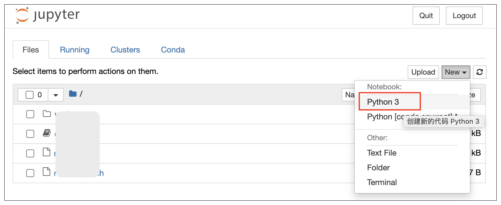

- 00 开篇词 如何高效入门PyTorch？.md.html
- 01 PyTorch：网红中的顶流明星.md.html
- 02 NumPy（上）：核心数据结构详解.md.html
- 03 NumPy（下）：深度学习中的常用操作.md.html
- 04 Tensor：PyTorch中最基础的计算单元.md.html
- 05 Tensor变形记：快速掌握Tensor切分、变形等方法.md.html
- 06 Torchvision（上）：数据读取，训练开始的第一步.md.html
- 07 Torchvision（中）：数据增强，让数据更加多样性.md.html
- 08 Torchvision（下）：其他有趣的功能.md.html
- 09 卷积（上）：如何用卷积为计算机“开天眼”？.md.html
- 10 卷积（下）：如何用卷积为计算机“开天眼”？.md.html
- 11 损失函数：如何帮助模型学会“自省”？.md.html
- 12 计算梯度：网络的前向与反向传播.md.html
- 13 优化方法：更新模型参数的方法.md.html
- 14 构建网络：一站式实现模型搭建与训练.md.html
- 15 可视化工具：如何实现训练的可视化监控？.md.html
- 16 分布式训练：如何加速你的模型训练？.md.html
- 17 图像分类（上）：图像分类原理与图像分类模型.md.html
- 18 图像分类（下）：如何构建一个图像分类模型_.md.html
- 19 图像分割（上）：详解图像分割原理与图像分割模型.md.html
- 20 图像分割（下）：如何构建一个图像分割模型？.md.html
- 21 NLP基础（上）：详解自然语言处理原理与常用算法.md.html
- 22 NLP基础（下）：详解语言模型与注意力机制.md.html
- 23 情感分析：如何使用LSTM进行情感分析？.md.html
- 24 文本分类：如何使用BERT构建文本分类模型？.md.html
- 25 摘要：如何快速实现自动文摘生成？.md.html
- 加餐 机器学习其实就那么几件事.md.html
- 用户故事 Tango：师傅领进门，修行在个人.md.html
- 答疑篇 思考题答案集锦.md.html
- 结束语 人生充满选择，选择与努力同样重要.md.html
- 捐赠
01 PyTorch：网红中的顶流明星
你好，我是方远。
从这节课开始，我们正式进入PyTorch基础篇的学习。
在基础篇中，我们带你了解PyTorch的发展趋势与框架安装方法，然后重点为你讲解NumPy和 Tensor的常用知识点。
掌握这些基础知识与技巧，能够让你使用 PyTorch 框架的时候更高效，也是从头开始学习机器学习与深度学习迈出的第一步。磨刀不误砍柴工，所以通过这个模块，我们的目标是做好学习的准备工作。
今天这节课，我们先从PyTorch的安装和常用编程工具说起，先让你对PyTorch用到的语言、工具、技术做到心里有数，以便更好地开启后面的学习之旅。
PyTorch登场
为什么选择 PyTorch 框架，我在开篇词就已经说过了。从19年起，无论是学术界还是工程界 PyTorch 已经霸占了半壁江山，可以说 PyTorch 已经是现阶段的主流框架了。
这里的Py我们不陌生，它就是Python，那Torch是什么？从字面翻译过来是一个“火炬”。
什么是火炬呢？其实这跟TensorFlow中的Tensor是一个意思，我们可以把它看成是能在GPU中计算的矩阵。
那PyTorch框架具体是怎么用的呢？说白了就是一个计算的工具。借助它，我们就能用计算机完成复杂的计算流程。
但是我们都知道，机器跟人类的“语言”并不相通，想要让机器替我们完成对数据的复杂计算，就得先把数据翻译成机器能够理解的内容。无论是图像数据、文本数据还是数值数据，都要转换成矩阵才能进行后续的变化和运算。
搞定了读入数据这一步，我们就要靠PyTorch搞定后面各种复杂的计算功能。这些所有的计算功能，包括了从前向传播到反向传播，甚至还会涉及其它非常复杂的计算，而这些计算统统要交给 PyTorch 框架实现。
PyTorch会把我们需要计算的矩阵传入到GPU（或CPU）当中，在GPU（或CPU）中实现各种我们所需的计算功能。因为GPU做矩阵运算比较快，所以在神经网络中的计算一般都首选使用GPU，但对于学习来说，我们用CPU就可以了。
而我们要做的就是，设计好整个任务的流程、整个网络架构，这样PyTorch才能顺畅地完成后面的计算流程，从而帮我们正确地计算。
安装PyTorch及其使用环境
在 PyTorch 安装之前，还有安装 Python3 以及 pip 这些最基础的操作，这些你在网上随便搜一下就能找到，相信你可以独立完成。
这里我直接从安装 PyTorch开始说，PyTorch 安装起来非常非常简单，方法也有很多，这里我们先看看最简单的方法：使用 pip 安装。
使用pip安装PyTorch
CPU版本安装：
# Linux
pip install torch==1.9.0+cpu torchvision==0.10.0+cpu torchaudio==0.9.0 -f https://download.pytorch.org/whl/torch_stable.html
# Mac & Windows
pip install torch torchvision torchaudio
GPU版本安装：（默认CUDA 11.1 版本）
# Linux & Windows
pip install torch==1.9.0+cu111 torchvision==0.10.0+cu111 torchaudio==0.9.0 -f https://download.pytorch.org/whl/torch_stable.html
我们只需要将上面的命令复制到计算机的命令行当中，即可实现快速安装。
这里有两个版本，一个GPU版本，一个CPU版本。建议你最好选择安装GPU版本，也就是说我们的硬件设备中最好有英伟达独立显卡。用GPU训练深度学习模型是非常快速的，所以在实际项目中都是使用GPU来训练模型。
但是如果说大家手里没有供开发使用的英伟达GPU显卡的话，那么安装CPU版本也是可以的，在学习过程中，CPU也足够让我们的小实验运行起来。
另外，安装GPU版本前，需要安装对应版本的CUDA工具包。我们可以到英伟达官网，选择相应操作系统的CUDA工具包，进行下载与安装。硬件设备中无英伟达显卡的，可以略过这部分。
目前 PyTorch 的稳定版本是 1.9.0，后续如果 PyTorch 的版本升级更新了，我们再将命令中的版本号稍作修改就可以了。
其它方法安装PyTorch
这里是PyTorch的官网，在页面如下图所示的位置，我们可以看到有一些配置选项和安装命令。
我们可以根据页面上的指引，依次选择PyTorch的版本、你的操作系统、安装方式、编程语言以及计算平台，然后根据最下方的执行命令进行安装即可。
值得注意的是，Mac的操作系统只能安装CPU版本。我尝试下来最简单的方式，还是使用pip来安装。
验证是否安装成功
你在终端中输入“python”，就可以进入到Python交互模式。
首先输入如下代码，如果没有报错，就意味着PyTorch已经顺利安装了。
import torch
接下来，输入下面的代码，如果输出结果是“True”，意味着你可以使用 GPU。 这行代码的意思是检测GPU是否可用。
torch.cuda.is_available()
这里你也许会有疑问，为什么我安装的明明是 GPU 版本，但是代码却返回了“False”，显示GPU不可用呢？
对于这个问题，我们依次按照下面的步骤进行检查。
1.检查计算机上是否有支持CUDA的GPU。
首先查看电脑的显卡型号以及是否有独立显卡，如果没有以“NVIDIAN”名称开头的独立显卡，则不能支持CUDA，因此GPU不可用。
然后，你可以在这个页面查询GPU是否支持CUDA。如果你的GPU型号在页面的列表中，则表示你的计算机搭载了能够利用 CUDA 加速应用的现代 GPU，否则GPU也不可用。
若GPU支持CUDA，你还需要确保已经完成了上面介绍过的CUDA工具包的安装。
2.检查显卡驱动版本。
在终端中输入“nvidia-smi”命令，会显示出显卡驱动的版本和CUDA的版本，如下图所示。
如果显卡驱动的版本过低，与CUDA版本不匹配，那么GPU也不可用，需要根据显卡的型号更新显卡驱动。
我用表格的方式，帮你梳理了CUDA版本与GPU驱动版本的对应关系，你可以根据自己计算机驱动的情况对照查看。例如，CUDA 11.1支持的 Linux驱动程序是450.80.02以上。-
我们可以在这里下载并安装显卡驱动程序。
3.检查PyTorch版本和CUDA版本是否匹配？
PyTorch版本同样与CUDA版本有对应关系，我们可以在这个页面查看它们之间的对应关系。如果两者版本不匹配，可以重新安装对应版本的PyTorch，或者升级CUDA工具包。
使用Docker
通过Docker使用PyTorch也非常简单，连安装都不需要，但是前提是你需要熟悉有关Docker的知识。
如果你会熟练地使用Docker，我推荐后面这个网页链接供你参考，这里有很多的PyTorch的Docker镜像，你可以找到自己需要的镜像，然后拉取一个镜像到你的服务器或者本地，直接启动就可以了，无需额外的环境配置。
常用编程工具
在使用PyTorch进行编程之前，我们先来看看几个常用的编程工具，但是并不要求你必须使用它们，你可以根据自己的喜好自由选择。
Sublime Text
Sublime Text是一个非常轻量且强大的文本编辑工具，内置了很多快捷的功能，对于我们开发来说非常便捷。
例如，它可以自动为项目中的类、方法和函数生成索引，让我们可以跟踪代码。具体就是通过它的goto anything功能，根据一些关键字，查找到项目中的对应的代码行。另外，它能支持的插件功能也很丰富。
PyCharm
PyCharm 作为一款针对 Python 的编辑器，配置简单、功能强大，使用起来省时省心，对初学者十分友好。它拥有一般 IDE 所具备的功能，比如：语法高亮、项目管理、代码跳转、代码补全、调试、单元测试、版本控制等等。
Vim
Vim是Linux系统中的文本编辑工具，非常方便快捷，并且很强大。我们在项目中经常用到它。
在我们的项目中，经常是需要登录到服务器上进行开发的，服务器一般都是Linux系统，不会有Sublime Text与PyCharm，所以，我们用Vim打开代码，直接去进行编辑就可以了。
对于没有接触过Linux，或者一直习惯使用IDE来编程开发的同学，初步接触的时候，可能觉得Vim不是很方便，但实际上，Vim包含了丰富的快捷键，对于Shell与Python的开发来说非常高效。
但是Vim的缺点正如刚才所说，你需要去学习它的使用方法，有一点点门槛，但是只要你学会了，我保证你将对它爱不释手（这里也推荐有需要的同学去看看隔壁的《Vim 实用技巧必知必会》专栏）。
Jupyter Notebook&Lab
Jupyter Notebook 是一个开源的Web应用，这也是我最想推荐给你的一个工具。它能够让你创建和分享包含可执行代码、可视化结构和文字说明的文档。
在后面的课程，如果涉及图片生成或结果展示，我们也会使用到 Jupyter Notebook，这里推荐你先安装好。
简而言之，Jupyter Notebook是以网页的形式打开，可以在网页页面中直接编写代码和运行代码，代码的运行结果也会直接在代码块下显示。比如在编程过程中需要编写说明文档，可以在同一个页面中直接编写，便于及时说明、解释。
而 Jupyter Lab 可以看做是 Jupyter Notebook 的终极进化版，它不但包含了Jupyter Notebook所有功能，并且集成了操作终端、打开交互模式、查看csv文件及图片等功能。
Jupyter Notebook在我们的深度学习领域非常活跃。在实验测试阶段，相比用py文件来直接编程，还是Jupyter Notebook方便一些。在项目结束之后如果要书写项目报告，我觉得用Jupyter也比较合适。
使用pip安装Jupyter
通过pip安装 Jupyter Notebook的命令如下。
pip install jupyter
通过pip安装Jupyter Lab的命令如下。
pip install jupyterlab
启动Jupyter
完成安装，就可以启动了。我们直接在终端中，执行下面的命令，就可以启动 Jupyter Notebook。
jupyter notebook
启动 Jupyter Lab需要在终端执行如下命令。
jupyter lab
不管在macOS系统里，还是在Windows系统，通过以上任意一种方式启动成功之后，浏览器都会自动打开Jupyter Notebook或者Jupyter Lab的开发环境（你可以回顾下“Jupyter Notebook & Lab”那个例子里的界面）。
运行Jupyter Notebook
进入到 Jupyter Notebook 的界面，我们尝试新建一个Python的Notebook。具体操作方法如下图所示。点击“New”下拉菜单，然后点击“Python 3”选项，来创建一个新的Python Notebook。

上面我们已经讲过了 PyTorch 的安装方法，我们可以执行下面这段代码，来看看 PyTorch 是否已经安装成功。
import torch
torch.__version__
点击运行按钮，我们可以看到代码执行的结果，输出了当前安装的 PyTorch 的版本，即PyTorch 1.9.0 的GPU版本。这说明 PyTorch 框架已经安装成功。

小结
恭喜你完成了这节课的学习。
今天，我们一起了解了PyTorch 框架的用途，简单来说就是能利用GPU帮我们搞定深度学习中一系列复杂运算的框架。
想要用好这个工具，我们就得设计好整个任务的流程、整个网络架构，这样PyTorch才能实现各种各样复杂的计算功能。
之后我们学习了PyTorch 框架的安装方法，我还给你推荐了一些深度学习编程的常用工具。其中我最推荐的工具就是 Jupyter Notebook，这个工具在深度学习领域里常常会用到，后面课程里涉及图片生成或者结果展示的环节，我们也会用到它。
课程的准备工作就是这些，让我们一起动手，配置好环境，并选择一个你觉得顺手的开发工具，正式开始PyTorch的探索之旅吧！
千里之行，始于足下。我在下节课等你，如果你有什么问题，也可以通过留言区和我交流。
我是方远，我们下一讲见！
© 2019 - 2023 Liangliang Lee. Powered by gin and hexo-theme-book.